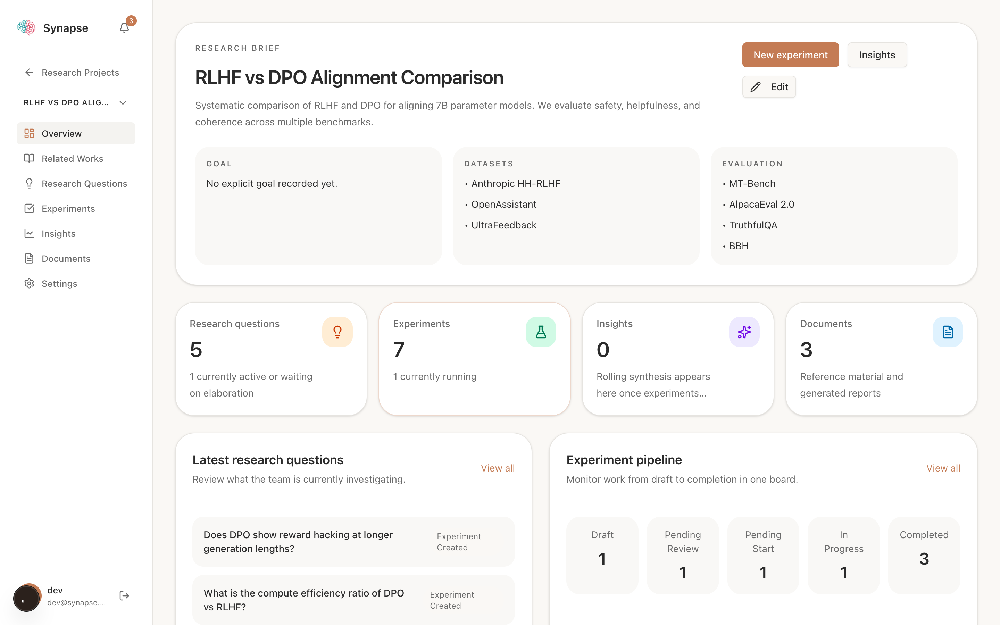
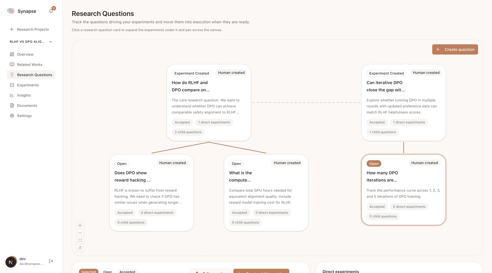
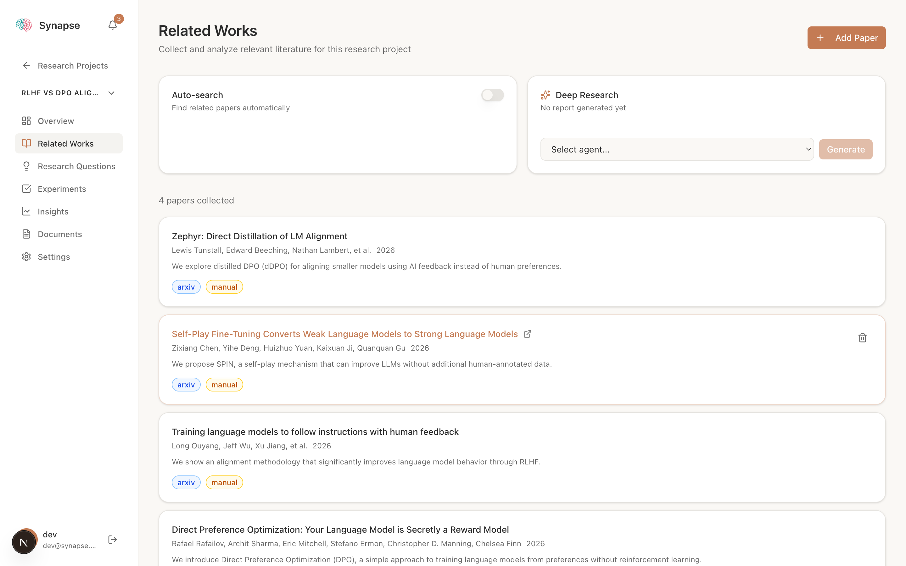
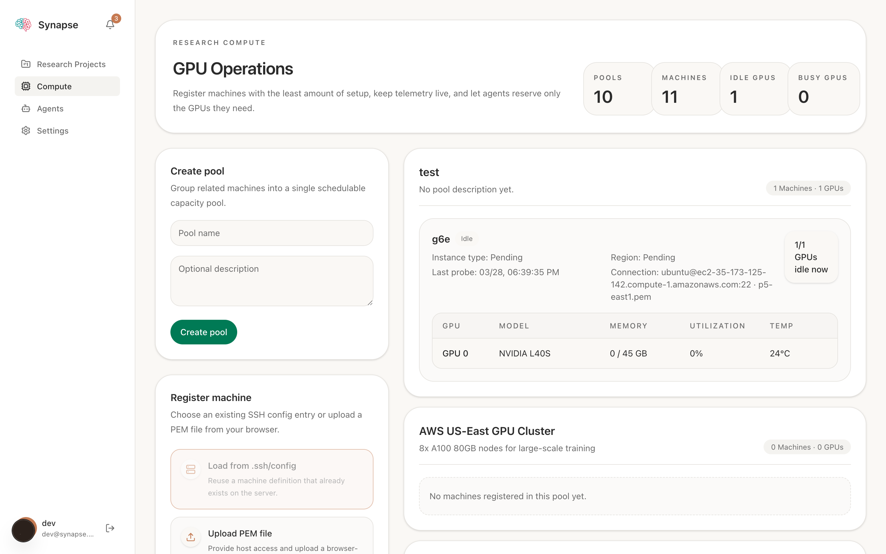

// the platform
See it in action

Your research at a glance
Each project starts with a research brief — description, datasets, and evaluation criteria. The dashboard surfaces live metrics (research questions, running experiments, documents) and a mini experiment pipeline so you always know where things stand.

Five-column experiment pipeline
Experiments flow through Draft, Pending Review, Pending Start, In Progress, and Completed. Each card shows live status badges, assigned agent, and outcome summaries. Toggle the autonomous loop to let agents propose new experiments when queues empty.

Hierarchical question canvas
Map your research questions as a visual hierarchy. Parent questions break into child questions, each linked to experiments. Pan and zoom the canvas to explore the full question tree and track which experiments are driving which questions forward.

Literature & deep research
Paste an arXiv URL to import paper metadata instantly, or enable auto-search to let agents find relevant papers via Semantic Scholar. Select an agent and click Generate to produce a deep research report synthesizing your entire paper collection.

GPU pool orchestration
Register machines via SSH config or PEM upload. Group them into compute pools that can be bound to projects. Agents reserve specific GPUs, access machines via managed SSH key bundles, and report live telemetry — model, memory, utilization, and temperature.